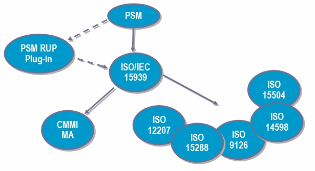

|
Relationships
Main Description
PSM, which stands for Practical Software & Systems Measurement, is an initiative consisting of measurement professionals in government, industry, and academia that joined together to gather measurement best practices and help put measurement in wide practice. PSM gives you implementation guidance as well as provides a list of sample measures. PSM was the base document for ISO/IEC 15939, a new standard on software measurement process that was officially released in July 2002.
The 15939 standard is the basis for the other official standards that cover measurement and measurement process in various levels of depth. 15939 was also the base document for the Measurement and Analysis Process Area in the CMMI. 15939 describes the measurement process. It describes the activities and tasks that should be included in a measurement process.
By enabling RUP with concepts of the Practical Software and Systems Measurement guideline, we can essentially add a relationship to the existing standards and methodologies that talk about measurement.

Standards & Methodologies Relationships
The key message here is: Measurement is now considered a key management practice. By enabling RUP with concepts of the Practical Software and Systems Measurement guideline, we can essentially add a relationship to the existing standards and methodologies that talk about measurement.
| MCG01 |
McGarry, Jones et al. Oct, 2001 (1st edition). Practical Software Measurement: Objective Information for Decision Makers. Addison-Wesley Publishing Co. |
|
|
This book is the official, definitive guide to PSM written by the leaders of the PSM development initiative, and is based on the contributions and collaboration of key practitioners in the software measurement field, including John McGarry, David Card, Cheryl Jones, Beth Layman, Elizabeth Clark, Joseph Dean, Fred Hall.
Written for software managers and developers, this text provides coverage of techniques designed to provide quantitative analysis of software projects, including software measurement, risk managament, and financial performance management. It describes how organizations can measure the effectiveness of software from quality, cost and schedule perspectives.
For more information and examples, please visit the PSM website http://www.psmsc.com.
Note: PSM originally stood for Practical Software Measurement. "& Systems" was added after the book was slated to be published, however, it was decided that the acronym would not change. |
| ISO15939 |
ISO/IEC Standard 15939, "Software Measurement Process", ISO, Geneva. |
|
|
ISO/IEC 15939 describes the measurement process, including the activities and tasks that should be included in a measurement process. |
| CMMI |
CMMI-SE/SW, V1.1, "Capability Maturity Model® Integration (CMMISM)", Carnegie Mellon Institute, Pittsburgh. |
|
|
The CMMI models provide guidance to use when developing processes. The CMMI models are not processes or process descriptions. Organizations can use a CMMI model to help set process-improvement objectives and priorities.
For more information, please visit the CMMI website http://www.sei.cmu.edu/cmmi/cmmi.html. | |
|